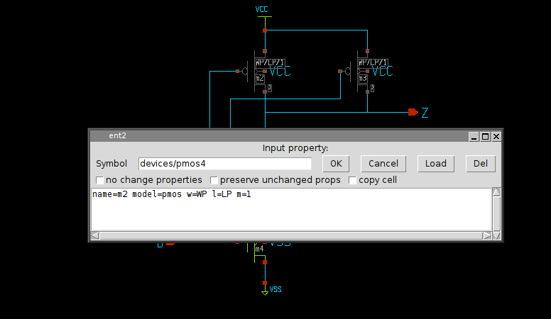
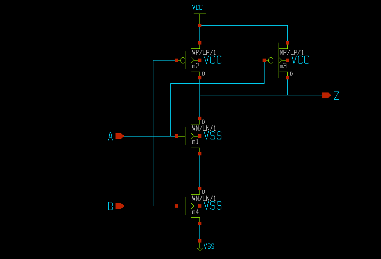
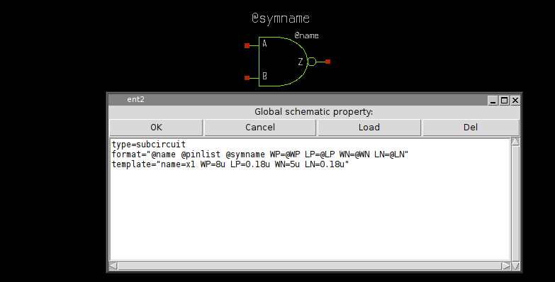
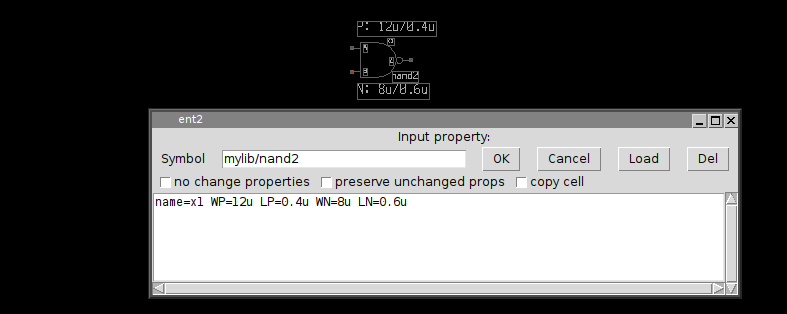

COMPONENT PARAMETERS
What makes subcircuits really useful is the possibility to pass parameters. Parametrized subcircuits are like functions with arguments in a programming language. One single component can be instantiated with different parameters. Recall the NAND2 gate we designed. It is made of four MOS transistors. A MOS transistor has at least 2 parameter, channel length (L) and transistor width (W) that define its geometry. we have 2 NMOS transistors and 2 PMOS transistors, so we would like to have 4 parameters passed to the NAND gate: P-channel with/length (WP/LP) and N-channel with/length (WN/LN). So open again the mylib/nand2.sch nand gate and replace the w=, l= properties with: w=WN l=LN for the two NMOS and w=WP l=LP for the two PMOS.
TIP: you can select two PMOS at the same time by clicking the second one with the shift key pressed, so with edit property 'q' key you will change properties for both.
By doing the same for the NMOS transistors we end up with a schematic with fully parametrized transistor geometry.
Now we have to change the mylib/nand2.sym symbol. Save the changes in the nand2 schematic (<shift>S) and load ('L') the nand2 symbol. without selecting anything hit the 'q' key to edit the symbol global property string. make the changes as shown in the picture.
The template attribute defines the default values to assign to WN, LN, WP, LP. The format string is updated to pass parameters, the replacement character @ is used to substitute the parameters passed at component instantiation. You may also add some descriptive text ('t') so you will visually see the actual value for the parameters of the component:
Now close the modified symbol saving the changes. Let's test the placement of the new modified symbol. Start a new schematic (menu File -> New) and insert (Insert key) the NAND2 gate. by pressing 'q' you are now able to speciify different values for the geometric parameters:
let's place a second instance (select and 'c' copy key) of the nand gate. set for the second NAND gate different WN, LN, WP, LP parameters. place some labels on input and outputs and connect the output of the first NAND gate to one of the inputs of the second NAND gate. Name the pin labels as in the picture using the edit property 'q' key on selected lab_pin instance
TIP: XSCHEM can automatically place pin labels on a component: just select it and press the 'h' key.

now save the new schematic ('s' key, save in mylib/test2.sch) If you enable the netlist window, menu Options->Show netlist win and press the Netlist button in the menu bar you get the following netlist:
**.subckt test2 x1 Z net1 C nand2 WP=12u LP=0.4u WN=8u LN=0.6u x2 net1 A B nand2 WP=5u LP=1u WN=3u LN=1.5u **** begin user architecture code **** end user architecture code **.ends * expanding symbol: mylib/nand2 # of pins=3 .subckt nand2 Z A B WP=8u LP=0.18u WN=5u LN=0.18u *.ipin A *.opin Z *.ipin B m1 Z A net1 VSS nmos w=WN l=LN m=1 m2 Z B VCC VCC pmos w=WP l=LP m=1 m3 Z A VCC VCC pmos w=WP l=LP m=1 m4 net1 B VSS VSS nmos w=WN l=LN m=1 **** begin user architecture code **** end user architecture code .ends .GLOBAL VCC .GLOBAL VSS .end
As you can see there are 2 components placed passing parameters to a nand2 subcircuit. There is complete freedom in the number of parameters. Any kind parameters can be used in subcircuits as long as the simulator permits these.